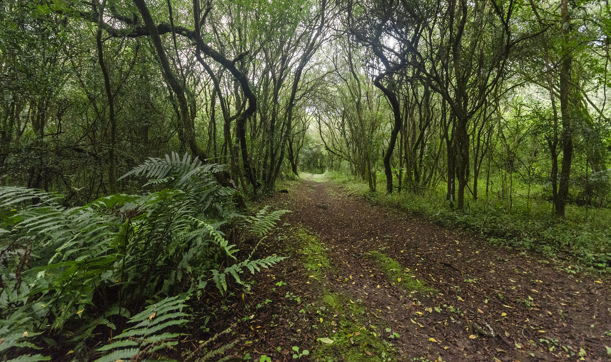

Un laboratorio vivo donde estudiantes y comunidad cuidan más de 100 especies nativas y exóticas del NOA argentino.
Lo que nos mueve, hacia dónde vamos y los principios que sostienen el proyecto.
Los principios que sostienen cada decisión y cada plantación.
Priorizamos las especies nativas del NOA y la biodiversidad local.
El predio es un aula al aire libre abierta a todos.
Trabajamos con vecinos, escuelas e instituciones.
Rescatamos coplas, nombres y saberes locales de cada especie.

En La Arboleda combinamos educación, conservación y comunidad. Es un proyecto con identidad propia, alojado en el predio del I.E.S. N° 6023 "Dr. Alfredo Loutaif". Cada árbol fue plantado, identificado y registrado en colaboración con la comunidad educativa.
Cada sector del predio tiene su propio ecosistema. Haz clic en cualquier zona para descubrir qué árboles viven allí.
Haz clic en cualquier zona para ver sus especies
La Arboleda funciona en el predio del I.E.S. N° 6023 "Dr. Alfredo Loutaif", en San Ramón de la Nueva Orán, Salta — manteniendo siempre su identidad de proyecto independiente.
Haz clic sobre el mapa para activar el zoom con scroll.
Tres pasos para que tu visita o proyecto se conecte con el bosque.
Recorre el predio con guías estudiantiles. Descubre cada especie, su origen y sus usos tradicionales.
Participa en talleres sobre biodiversidad, técnicas de plantación y conservación del bosque nativo.
Llévate plantines, semillas y la metodología para crear tu propia arboleda en tu escuela o barrio.
Recibimos escuelas, instituciones y curiosos. Coordinamos visitas guiadas con estudiantes del IES como anfitriones.